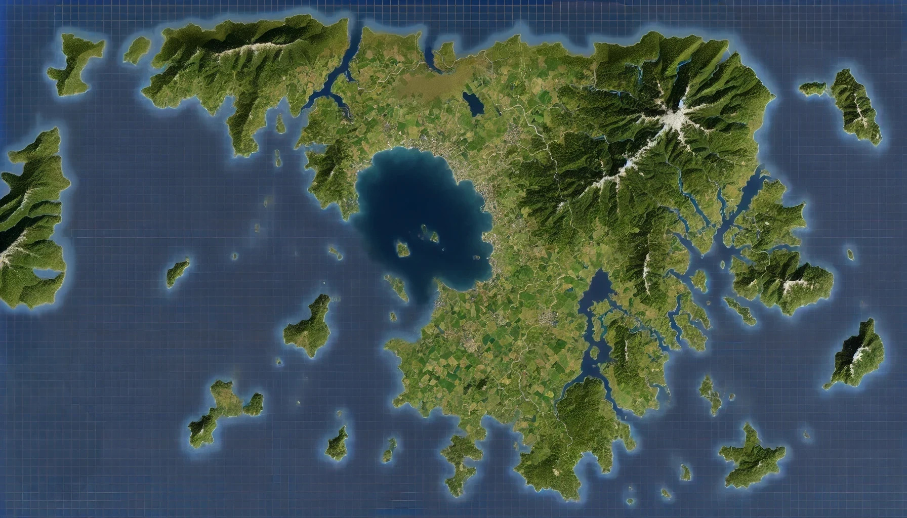
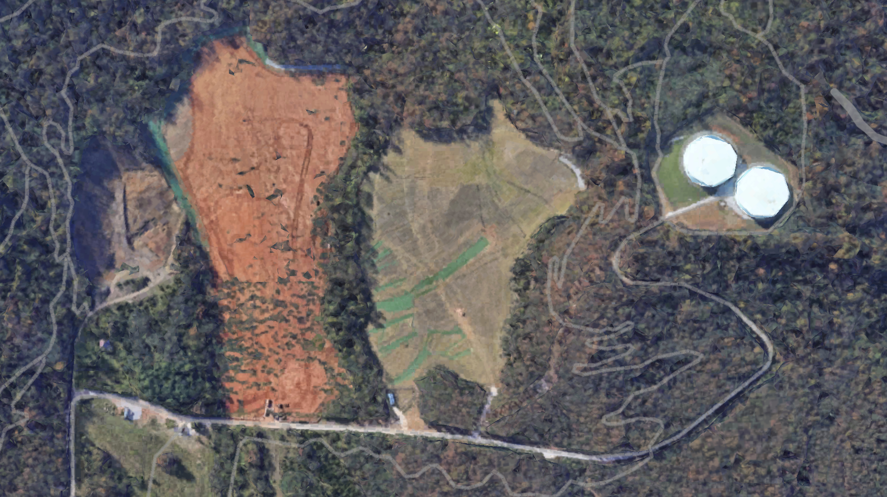

Operation Ember
Securing the Safety of Taipura and our National Objectives
Securing the Safety of Taipura and our National Objectives
Map showing the Island of Taipura
Map of Proposed Posturing Zone
See attatched for memorandums on Shendao and Taipuran Histories.
Download Link to memorandumsThe people of Taipura have faced political tension since thier seperation from the state of Shendao in the early 1900s. As a result the people have grown annoyed with any sort of foreign intervention but still remain friendly to US forces because of thier help in WWII. In the past Taipura has had allies abandon thier cause in order to protect thier own interests which has left the Taipuran people struggling to trust other nations. When interacting with the Taipurans you must have a way to gain their trust before asking anything of them. Once you have earned thier trust they are more than willing to cooperate with you. If this trust is broken there is almost no way of earning it back. Some ways to earn thier trust are: helping them with favors, trading, listening to thier stories. They are also identified by thier drivers liscense.
The Peoples Runification Movement or PRM is a growing political movement among Taipuran citizens. The movement's primary ideology is to reunification with mainland Shendao. Upon its initial founding, the movement argued against foreign intervention and empasized the economic benefits of reunification. As the movement has grown in popularity the PRM has been taking actions to stop the Taipuran Defense Force. These include but are not limited to riots, acts of terror, cyber attacks, and general harassment of military members. It is very difficult to differentiate PRM members from Taipuran citizens as they wear traditional Taipuran attire. There are some subtle methods to tell the difference from a member of the PRM and a citizen and are as follows: PRM members often carry firearms either concealed or in the open, PRM members will often speak negatively about the Taipuran Government or foreign allies, PRM members have sign and counter sign to reveal themselves, finally members of the PRM will not have a divers liscense as the Taipuran Government revoked all liscenses for those alligning themselves with PRM. When interacting with members of the PRM it is imperative to not immediately treat them as a threat, this will only reinforce thier distaste of foreign intervention.
The Shendao Militia is the primary fighting force for the country of Shendao. The are a neer-peer advarsary and have been in direct competiton with the U.S. for the past several years. The Militia is extremely disciplined and acquiring intel is extremely difficult. Militia members will make achieving National goals difficult ask they seek to reunify Taipura with Shendao. Any Militia members on Taipuran soil will be considered a declaration of war by the Taipuran Government. If one is seen notify your chain of command as soon as possible. Militia members are identified by a distinct lack of patches on their uniforms. If confronted they will give out very little information. It is crucial to be watching for any signs of Militia military movement at this time.
To achieve national objectives, operational security is imperative. No persons outside of the deployed force and evaluators must be informed of the operational plans. In order to ensure mission security forces should remain silent, misdirect, or respond with the following Diplomatic Immunity Statement when questioned by civilians, PRM members, or Shendao Milita. (1) “We are operating in due conduct to secure U.S. assets in accordance with internationallaw and our responsibilities fall under the United Nations (UN) Charter: Section 6-33.”
Objectives for Operation Ember:
No new information available at this time please check back later...